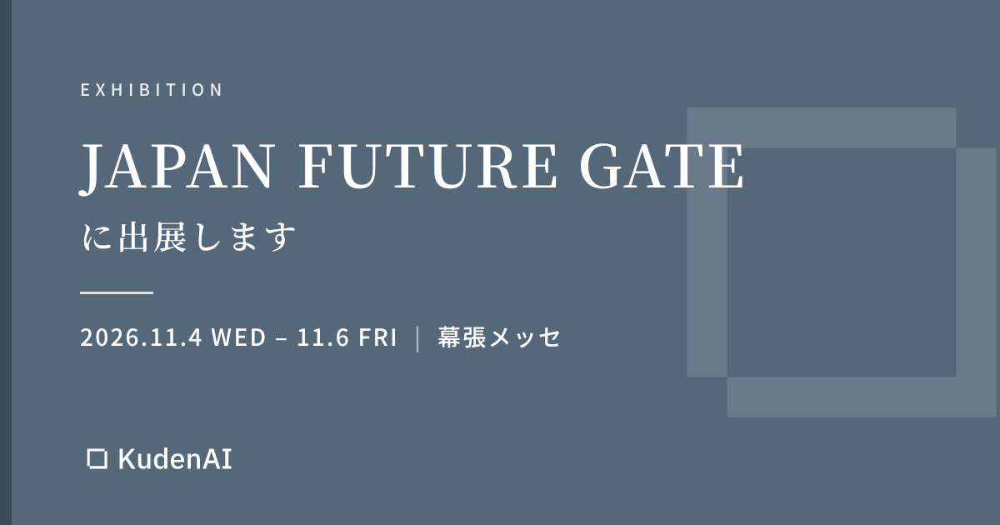

「JAPAN FUTURE GATE」に出展します

KudenAI株式会社は、2026年11月4日（水）〜6日（金）に幕張メッセで開催される「DX総合EXPO 2026 秋 東京」内の特設エリア「JAPAN FUTURE GATE」に出展します。
展示内容
仕事の判断は、メールやチャット、会議の中で日々下されています。しかし「なぜそう決めたのか」は記録に残りにくく、担当者が替わると同じ検討が繰り返されがちです。
当日は、こうしたやり取りの記録から「誰が・何を・なぜ決めたか」を拾い上げ、案件ごとの判断記録として残す仕組みをご紹介します。
- 決定の根拠となった元の発言を、引用付きで記録します。
- 理由が書かれていない決定は、担当者本人に選択肢付きの短い質問で確認します。
- 承認された判断は判断基準集にまとまり、次の担当者が参照できます。
会場では、貴社の業務に合わせた使い方のご相談も承ります。ぜひブースへお立ち寄りください。
ご来場のご案内
| 展示会名称 | DX総合EXPO 2026 秋 東京 特設エリア「JAPAN FUTURE GATE」 |
|---|---|
| 会期 | 2026年11月4日（水）〜6日（金） 10:00〜17:00 |
| 会場 | 幕張メッセ 国際展示場 展示ホール1〜3 |
| 主催 | Bizcrew EXPO実行委員会 |
| 入場 | 無料（事前登録制） |
| 公式サイト | https://www.bizcrew.jp/expo/dx-tokyo |
KudenAI株式会社について
KudenAI株式会社は、現場で語り継がれてきた知を活かす業務効率化システムの開発・導入支援を行う会社です。ベテランの判断基準や現場のノウハウを、日々の業務の中で自然に引き出し、誰でも使える形に変える仕組みを設計・開発しています。
本件に関するお問い合わせ先
KudenAI株式会社
メール：aoi.iio@kudenai.co.jp
Web：https://kudenai.co.jp/